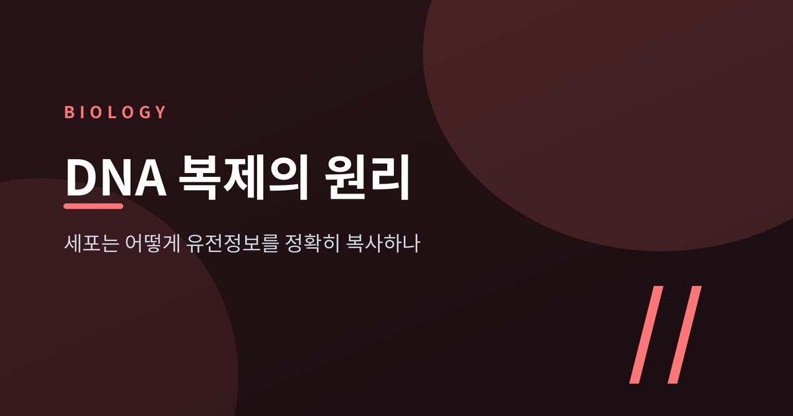
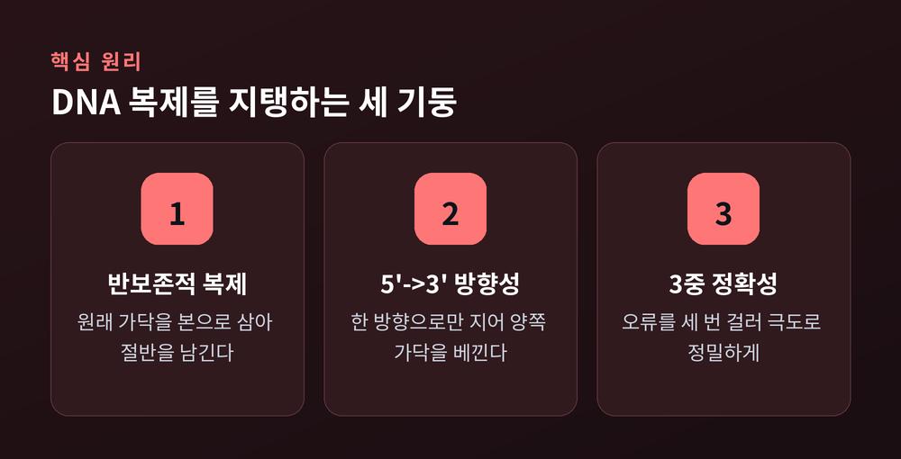
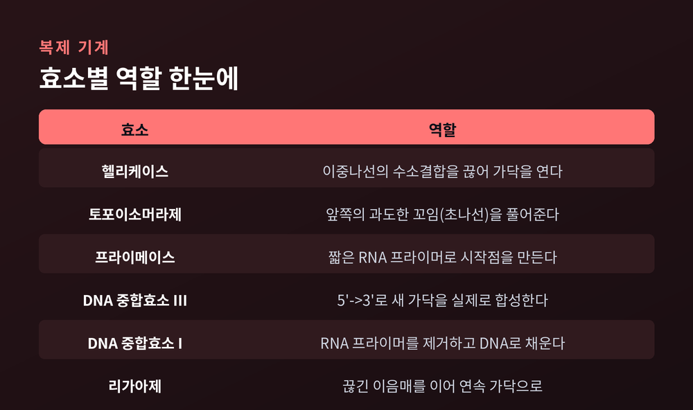
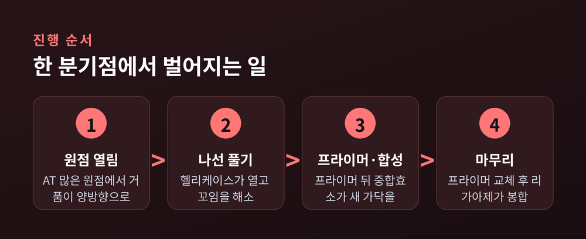
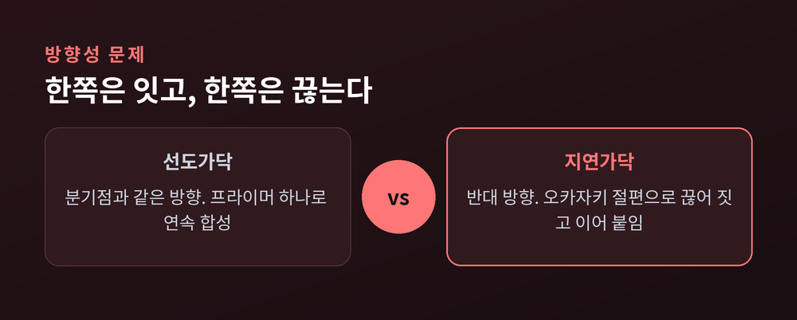
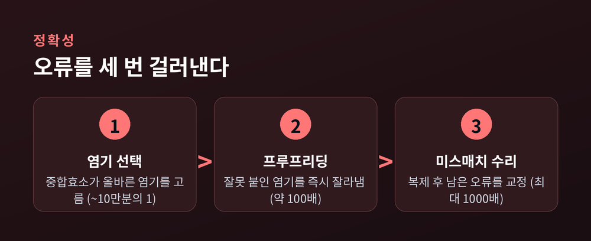

DNA 복제의 원리 — 세포는 어떻게 유전정보를 정확히 복사하나

세포 하나가 둘로 나뉘기 전, 30억 쌍이 넘는 유전정보가 통째로 복사됩니다. 이번 글에서는 그 복사가 어떤 순서와 장치로 이루어지는지, DNA 복제의 원리를 정리해 보겠습니다. 결론부터 말씀드리면, 핵심은 세 가지입니다. 원래 가닥을 본으로 삼는 방식, 한쪽 방향으로만 짓는 제약, 그리고 오류를 세 번 걸러내는 정확성입니다.

반은 남기고 반은 새로 — 반보존적 복제
DNA는 두 가닥이 서로 마주 보는 이중나선입니다. 복제가 끝나면 딸 DNA 두 개가 생깁니다. 그런데 각각을 뜯어보면 한 가닥은 원래의 부모 가닥이고, 다른 한 가닥만 새로 합성된 것입니다.
이렇게 원래 것을 절반 남기는 방식을 반보존적 복제라 부릅니다.
원리는 단순합니다. 각 가닥은 새 가닥을 만드는 주형, 즉 본이 됩니다. A에는 T, G에는 C가 짝을 이루므로, 한 가닥만 있으면 나머지 한 가닥은 저절로 결정됩니다. 정보를 두 벌로 늘리면서도 원본을 잃지 않는 셈입니다.
예전에는 이 방식이 세 가지 후보 중 하나에 불과했습니다. 지금은 정설입니다. 1958년 메셀슨과 스탈은 대장균을 무거운 질소에서 키워 부모 DNA를 무겁게 만든 뒤, 가벼운 질소로 옮겨 세대별 무게를 쟀습니다. 첫 세대가 전부 중간 무게로 나오면서, 원본을 통째로 남기는 보존적 모델도, 조각조각 뒤섞이는 분산적 모델도 배제되었습니다. "생물학에서 가장 아름다운 실험"이라 불릴 만합니다.
풀고, 잡고, 시작점을 놓는 효소들
복제는 여러 효소가 이어달리기를 하듯 진행됩니다. 순서가 있습니다.
먼저 헬리케이스가 나섭니다. 이 효소는 두 가닥을 붙들어 매던 수소결합을 끊어 이중나선을 엽니다. 나선을 풀면 그 앞쪽이 실타래처럼 과하게 꼬이는데, 이 꼬임은 토포이소머라제가 가닥을 잠깐 잘랐다 다시 이어 풀어 줍니다.
문제가 하나 있습니다. 새 가닥을 짓는 DNA 중합효소는 맨땅에서 첫 벽돌을 놓지 못합니다. 이미 놓인 조각의 끝에만 이어 붙일 수 있습니다. 그래서 프라이메이스가 짧은 RNA 프라이머를 먼저 깔아 시작점을 만들어 줍니다.
그다음이 주역입니다. 대장균에서는 DNA 중합효소 III가 프라이머 끝에서부터 새 가닥을 쭉 늘려 나갑니다. 일이 끝나면 DNA 중합효소 I이 임시로 깔았던 RNA 프라이머를 제거하고 그 자리를 DNA로 메웁니다. 마지막으로 리가아제가 남은 이음매를 붙여 끊긴 데 없는 한 가닥으로 완성합니다.

효소마다 맡은 일이 다릅니다. 하나라도 빠지면 복제는 멈추거나 어긋납니다.
순서대로 보는 복제 한 장면
앞의 효소들이 어떻게 맞물리는지, 한 분기점에서 벌어지는 일을 순서로 보면 이렇습니다.
복제는 특정 지점에서 시작됩니다. 이 자리를 복제 원점이라 합니다. 대장균의 원점은 약 245개 염기 길이이고, A와 T가 많습니다. A-T 결합은 수소결합이 둘뿐이라 셋인 G-C보다 풀기 쉽기 때문입니다. 원점에서 가닥이 벌어지면 복제 거품이 생기고, 이 거품은 양쪽으로 동시에 넓어집니다.

원핵과 진핵은 규모가 다릅니다. 대장균은 원형 염색체에 원점이 하나뿐이지만, 약 460만 염기쌍을 42분 만에 다 복사합니다. 사람의 염색체는 선형이고 훨씬 길어서, 유전체 전체에 원점이 최대 10만 개에 이릅니다. 여러 곳에서 동시에 짓지 않으면 시간을 감당할 수 없기 때문입니다.
왜 한쪽은 끊어서 지을까 — 방향성 문제
DNA 복제에서 가장 절묘한 대목이 방향성입니다.
모든 DNA 중합효소는 오직 한 방향, 5'에서 3' 쪽으로만 새 가닥을 늘립니다. 그런데 이중나선의 두 가닥은 서로 반대 방향으로 놓여 있습니다. 이 두 사실이 부딪히면 곤란한 일이 생깁니다. 분기점이 열리는 방향과 나란한 가닥은 문제없이 죽 이어 지을 수 있지만, 반대쪽 가닥은 그럴 수가 없습니다.
그래서 한쪽은 연속으로, 다른 쪽은 토막을 내서 짓습니다.

연속으로 지어지는 쪽이 선도가닥입니다. 프라이머 하나만 있으면 분기점을 따라 계속 이어 나갑니다. 반대쪽이 지연가닥입니다. 분기점과 어긋난 방향이라 짧은 조각으로 끊어 만들 수밖에 없습니다. 이 조각을 오카자키 절편이라 부릅니다. 조각마다 새 프라이머를 다시 깔아야 하고, 나중에 프라이머를 DNA로 갈아 끼운 뒤 리가아제가 조각들을 이어 붙입니다. 한 박자씩 늦게 진행된다 하여 "지연"이라는 이름이 붙었습니다.
번거로워 보이지만, 이것이 5'→3' 규칙을 어기지 않으면서 양쪽 가닥을 모두 복사하는 유일한 방법입니다.
오류를 세 번 걸러낸다 — 정확성의 비밀
30억 쌍을 베끼면서 실수가 없을 리 없습니다. 그런데 최종 오류율은 놀랍도록 낮습니다. 대략 10억에서 100억 염기당 한 번, 수치로는 10^-9에서 10^-10 수준입니다. 비결은 오류를 세 단계로 나누어 걸러내는 데 있습니다.

첫째, 중합효소가 애초에 올바른 염기를 고릅니다. 이 단계의 오류는 약 10만분의 1입니다.
둘째, 프루프리딩입니다. 중합효소에는 방금 잘못 붙인 염기를 되돌아가 잘라내는 교정 기능이 딸려 있습니다. 이 단계가 정확성을 약 100배 끌어올립니다.
셋째, 미스매치 수리입니다. 복제가 끝난 뒤에도 남은 짝 안 맞는 자리를 별도 장치가 찾아 고칩니다. 이 단계가 정확성을 최대 1,000배 더 높입니다.
세 단계를 곱하면 앞서 말한 극도로 낮은 오류율에 이릅니다. 완벽하지는 않습니다. 걸러지지 않은 소수의 오류가 곧 돌연변이이고, 진화의 재료가 되기도 합니다.
선형 염색체의 숙제 — 텔로미어와 텔로머레이스
원리 하나가 더 남았습니다. 선형 염색체만의 골칫거리입니다.
지연가닥은 프라이머가 있어야 시작합니다. 그런데 염색체의 맨 끝에서는 마지막 프라이머를 떼어낸 자리를 채울 방법이 없습니다. 그래서 복제할 때마다 끝이 조금씩, 대략 50~200 염기쌍씩 짧아집니다. 이를 말단 복제 문제라 합니다.
세포는 완충 장치로 이를 견딥니다. 염색체 양 끝에는 텔로미어라는 반복 서열이 놓여 있습니다. 정작 중요한 유전자 대신 이 부위가 먼저 닳습니다. 닳아도 되는 여유분인 셈입니다. 다만 이 여유분도 무한하지 않아, 계속 짧아지다 한계에 이르면 세포는 더 나뉘지 못하고 노화합니다. 이 한계를 헤이플릭 한계라 부릅니다.
짧아진 끝을 도로 늘리는 효소도 있습니다. 텔로머레이스입니다. 이 효소는 자기 안에 지닌 RNA를 본으로 삼아 반복 서열을 다시 붙이는 특수한 역전사효소입니다. 생식세포와 줄기세포에서는 활발하지만, 대부분의 정상 체세포에서는 거의 꺼져 있습니다. 문제는 암세포입니다. 암세포는 이 효소를 다시 켜 텔로미어 단축을 막고, 그 결과 끝없이 증식합니다.
정리하면 이렇습니다. DNA 복제는 원래 가닥을 본으로 절반 남기고, 5'→3'라는 한 방향의 제약 안에서 양쪽 가닥을 모두 베끼며, 오류를 세 번 걸러 정확성을 지킵니다. 선형 염색체의 끝은 텔로미어가 감당합니다.
수십 개의 효소가 초당 수백에서 수천 염기의 속도로, 그것도 100억 번에 한 번꼴로만 틀리며 일합니다. 세포가 조용히 반복하는 이 작업이야말로, 생명이 자신을 다음 세대로 정확히 건네는 방식입니다.